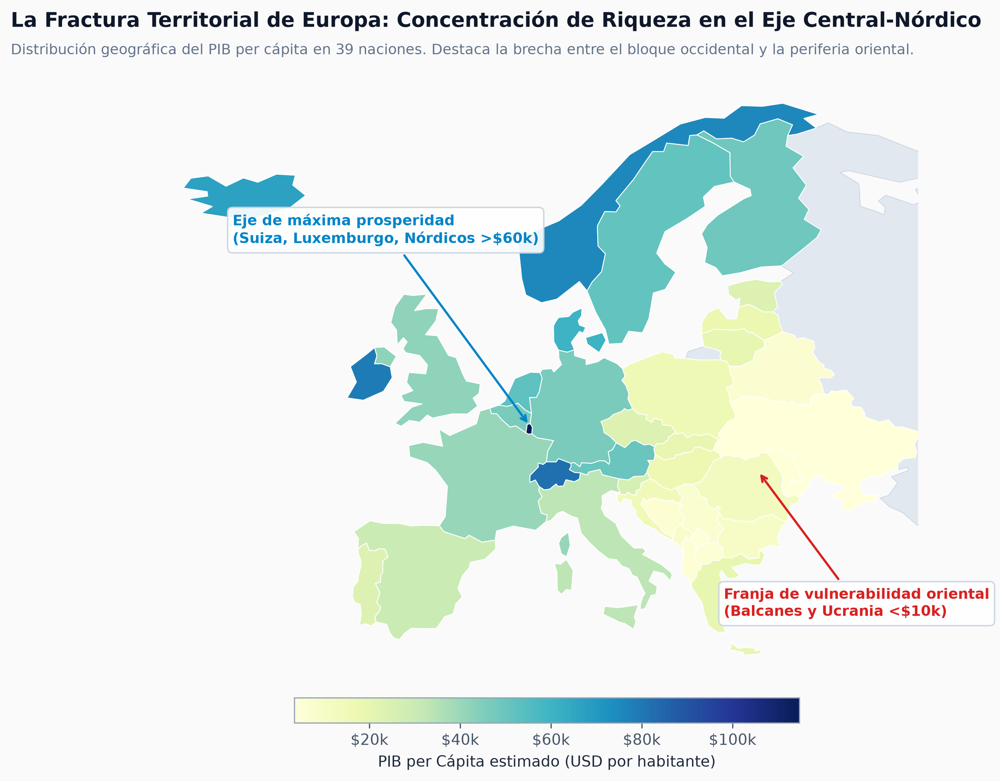
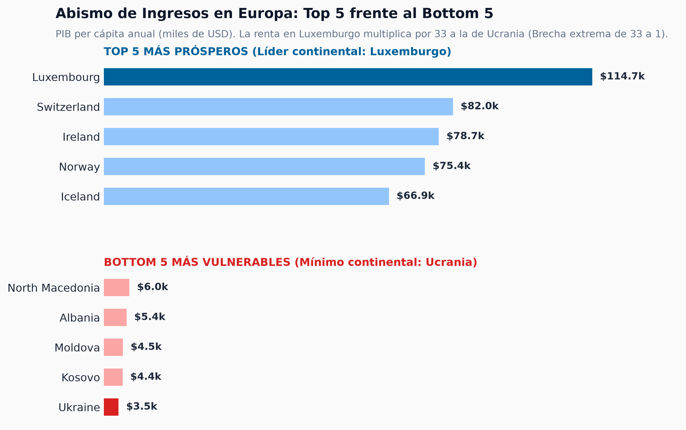
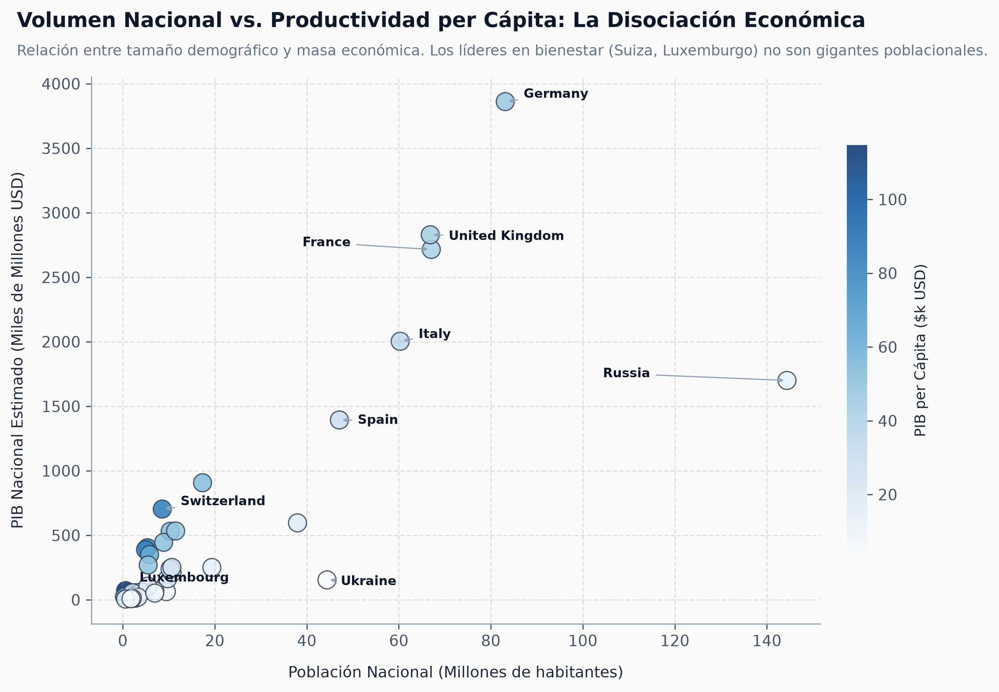
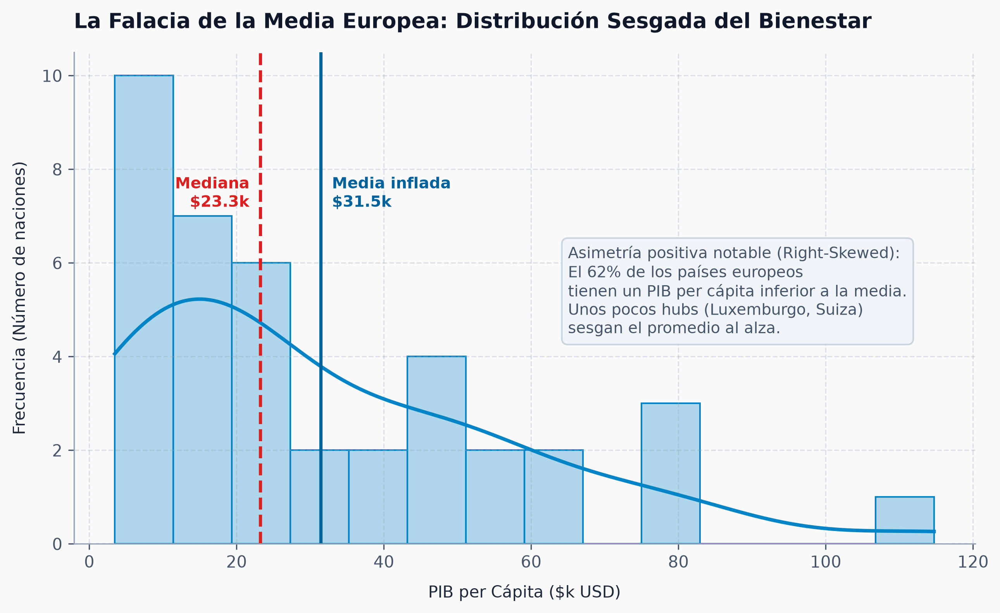

El Espejismo de la Cohesión
Tres fracturas invisibles que desmienten el mito de una Europa territorial y económicamente equilibrada.
La Riqueza se Atrinchera en el Eje Central y Nórdico
La distribución geográfica evidencia que el bienestar no fluye de forma homogénea, sino que se concentra en polos cerrados.

Un Continente Fracturado por un Factor de 33 a 1
La comparación de extremos desvela una distancia abismal que fractura cualquier estándar de convergencia real.

La Falacia del Volumen: El Tamaño no Compra Prosperidad
La relación entre masa demográfica y PIB demuestra una marcada desconexión entre potencia agregada y bienestar ciudadano.

La Trampa de la Media: El 64% de Europa Vive en la Sombra
La asimetría de la distribución desmonta el indicador oficial y obliga a adoptar la mediana como referencia real.

Rediseñar la Brújula: Tres Mandatos para las Políticas de Cohesión
La evidencia empírica desmiente la narrativa oficial y exige pasar de los promedios ficticios a la acción territorial.
01. Gobernar por la Mediana ($24.7k)
Sustituir la media aritmética como baremo de corte en fondos de convergencia (FEDER). Calibrar subsidios sobre la media continental condena a la invisibilidad al 64% del territorio europeo que vive por debajo de ese umbral.
02. Cerrar la Brecha Oriental (Ratio 33:1)
Concentrar la inversión de choque en infraestructuras y transición productiva en los Balcanes y el corredor oriental. Ningún proyecto de integración comunitaria es viable con una fractura económica de 33 a 1 entre ciudadanos.
03. Productividad sobre Tamaño
Superar el espejismo del PIB bruto: las mayores potencias en masa económica no lideran en bienestar real. La calidad de vida de un país es el resultado de la especialización inteligente y la fortaleza institucional.